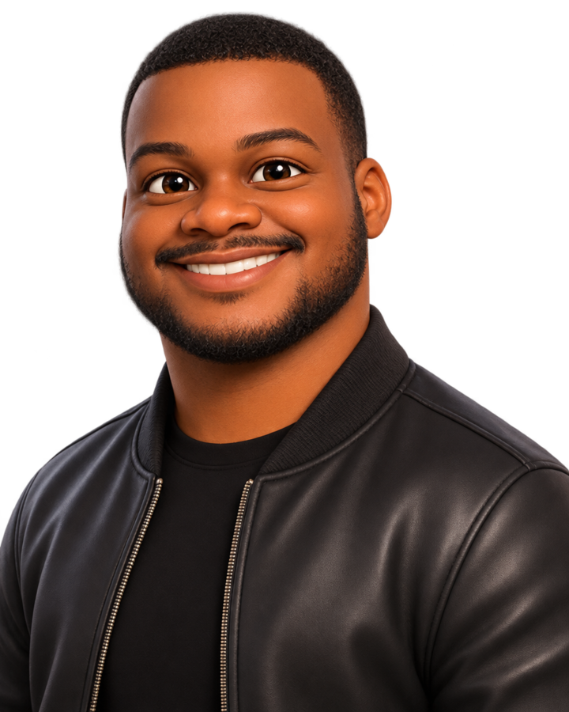

Michael
Esema
Graphic and multimedia
designer
I trained as an accountant and studied business management. I have designed for businesses since 2018.
Brand identities
Marketing campaigns
Publications
Multimedia content
3D character generated from my photograph.
I studied how businesses run, and I have designed for them the whole time.
BSc (Hons) Accounting, 2018
Numbers people can read at a glance. Price lists, menus and data figures set so the eye finds what matters first.
See it in: Sarah Bellus menu, The Signal data figures
MSc International Business Management, Merit, 2024
Design that travels. Work made for Nigerian and British audiences at once, without either one feeling translated.
See it in: Sarah Bellus, Silent Party 9ja
Master of Business Administration, 2022
I ask who the customer is, what the business sells and what it can afford, then design the identity that answers that.
See it in: Sarah Bellus identity, mykei.io
Lean Six Sigma, 2025
Templates and a single colour file, so the tenth piece is as consistent as the first.
See it in: The Signal issue system, the colour file behind mykei.io
Sarah Bellus: I fixed this
She needed a name people could trust before they tasted anything.
What I did
A serving spoon stands in for the dot of the i. The palette is aubergine and cream with a single orange, taken from the colour of jollof. The same mark then went onto the menu, the food photos and the website.
What I delivered
- The SiB monogram, in two colourways
- A printed menu
- Food photography treated with the mark
- A one-page website with an enquiry form
Who it was for
People in the UK booking food for weddings, naming ceremonies, birthdays and church events.
Mock-ups and background scene: the mark is mine, the settings are generated.
Silent Party 9ja: I fixed this
Three DJs, three channels, and every guest picks their own. The site had to show that choice.
What I did
Each channel owns one colour and only one is ever live at a time, so the page changes colour as you turn the dial.
What I delivered
- Visual identity and promotional materials as design lead, part-time, 2018 to February 2023
- A new identity and booking site, 2026, in development
The 2018 to 2023 work belongs to the brand and is published on its Instagram, @silentparty9ja.
The page changes colour as you turn the dial.
Background scene: mock-up, the artwork is mine, the setting is generated.
B’s Hive Hotels & Suites: I fixed this
One mark had to work on a letterhead, as a watermark and on pens and mugs.
In the design seat
I designed the logo, a B and an H locked into one block, in the hotel’s red and blue, and the letterhead that carried it, with the monogram repeated as a watermark. The same mark went onto notebooks, jotters, pens, mugs and flasks.
In the finance seat
As Head Accountant I designed document templates and reporting frameworks that were adopted across departments, which cut preparation time and made business communications consistent.
Head Accountant, 2019 to 2020. Assistant Manager, 2020 to 2023. Abuja.
Background scene: mock-up, the logo and letterhead are mine.
A publication that checks facts had to look like it checks them.
What I did
A white ground, one red and a newspaper masthead keep it looking like a record. The corrections policy shaped the layout as much as the type did.
What I delivered
- A newspaper masthead
- Numbered issues, with a back-of-book index
- Figures drawn from the sourced data in each piece
Designer and editor, 2026. Live at mykei.io/signal.
Corrections stay on the record.
Mykei Securities: I fixed this
An early version of the site drifted into five slightly different golds.
What I did
I set a rule that every colour on the site comes from one file, each checked for contrast.
What I delivered
- The company identity
- The website at mykei.io
- One colour file that every page imports
Founder and designer, 2026. mykei.io
Design with a budget and a deadline in mind.
Print production
I wrote briefs for outside print vendors, checked proofs and delivered final files to budget and deadline.
Presentations
I made branded decks for management reviews, investor briefings and partner meetings.
Reporting
I turned operational and financial figures into clear visual reports for people outside finance.
Templates
I built document templates and reporting frameworks that were adopted across departments.
I also planned the budgets and timelines for all marketing design and communications at a 40-room hotel, B’s Hive Hotels & Suites, Abuja, 2019 to 2023.
hello@michaelesema.com
michaelesema.com
Brand identities, marketing campaigns, publications and multimedia content, designed for businesses since 2018.
Tools
Photoshop, Illustrator, InDesign, Figma, Canva, CapCut and Blender.
3D character generated from my photograph. Mock-ups are marked: the artwork is mine, the settings are generated.